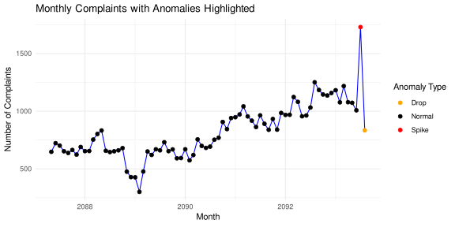

file_path <- "DataDNA Dataset Challenge - Consumer Financial Complaints Dataset - October 2025.xlsx"
dataset <- readxl::read_excel(file_path, sheet = 1)Anomaly Detection in Time Series
In this document, we will perform anomaly detection on the time series of monthly complaint volumes using STL decomposition and z-score method.
1 Load data
For each model we create a new query in PowerQuery that use original dataset as a source. So we repeat the data loading step here.
2 Anomaly Detection
library(dplyr)
library(lubridate)
library(forecast)
dataset <- dataset |>
janitor::clean_names()
freq <- 12 # monthly data
z_threshold <- 3 # anomalies beyond 3 SDs in residuals
# Aggregate to monthly level
monthly <- dataset |>
mutate(month = floor_date(as.Date(date_received), "month")) |>
group_by(month) |>
summarise(complaints = n(), .groups = "drop") |>
arrange(month)
# Create time series object
ts_data <- ts(monthly$complaints,
start = c(year(min(monthly$month)), month(min(monthly$month))),
frequency = freq
)
# Decompose with STL
stl_fit <- stl(ts_data, s.window = "periodic")
# Residuals and z-scores
resid <- as.numeric(stl_fit$time.series[, "remainder"])
z_scores <- scale(resid)
is_anomaly <- abs(z_scores) > z_threshold
# Output results
result <- monthly |>
mutate(
trend = as.numeric(stl_fit$time.series[, "trend"]),
season = as.numeric(stl_fit$time.series[, "seasonal"]),
resid = resid,
z_score = as.numeric(z_scores),
is_anomaly = is_anomaly
)
# Label anomaly direction
result <- result |>
mutate(anomaly_type = case_when(
is_anomaly & resid > 0 ~ "Spike",
is_anomaly & resid < 0 ~ "Drop",
TRUE ~ "Normal"
))
result# A tibble: 76 × 8
month complaints trend season resid z_score is_anomaly[,1] anomaly_type
<date> <int> <dbl> <dbl> <dbl> <dbl> <lgl> <chr>
1 2087-05-01 648 656. 1.66 -9.68 -0.105 FALSE Normal
2 2087-06-01 723 661. -31.1 93.4 0.961 FALSE Normal
3 2087-07-01 702 666. 85.1 -48.6 -0.508 FALSE Normal
4 2087-08-01 653 670. -15.3 -2.07 -0.0259 FALSE Normal
5 2087-09-01 638 675. -5.68 -31.5 -0.330 FALSE Normal
6 2087-10-01 664 680. 30.1 -45.7 -0.477 FALSE Normal
7 2087-11-01 624 684. -56.9 -3.06 -0.0362 FALSE Normal
8 2087-12-01 690 688. -15.0 17.4 0.176 FALSE Normal
9 2088-01-01 654 691. -11.8 -25.5 -0.268 FALSE Normal
10 2088-02-01 655 693. -68.4 29.9 0.305 FALSE Normal
# ℹ 66 more rows3 Evaluation
Let’s see how many anomalies were detected.
result |>
group_by(anomaly_type) |>
summarise(count = n())# A tibble: 3 × 2
anomaly_type count
<chr> <int>
1 Drop 1
2 Normal 74
3 Spike 1Visualize the anomalies in the time series.
library(ggplot2)
ggplot(result, aes(x = month, y = complaints)) +
geom_line(color = "blue") +
geom_point(aes(color = anomaly_type), size = 2) +
scale_color_manual(values = c("Normal" = "black", "Spike" = "red", "Drop" = "orange")) +
labs(
title = "Monthly Complaints with Anomalies Highlighted",
x = "Month",
y = "Number of Complaints",
color = "Anomaly Type"
) +
theme_minimal()
We only detected a couple of anomalies, which doesn’t add up much to the report. We’re going to skip this part of the analysis in the Power BI report for brevity.
4 Further Steps
We could explore more advanced anomaly detection methods, such as deep learning techniques like autoencoders and long short-term memory (LSTM) networks, or use ensemble methods combining multiple algorithms for improved accuracy. Additionally, incorporating external factors (e.g., economic indicators, regulatory changes) could enhance the detection of anomalies related to specific events. But for now, it’s not in the scope of this challenge.